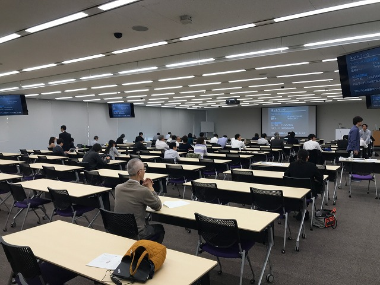
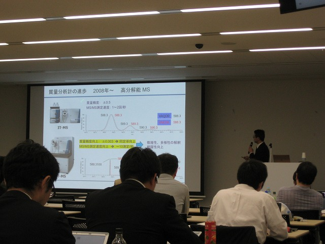
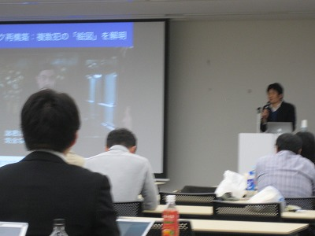
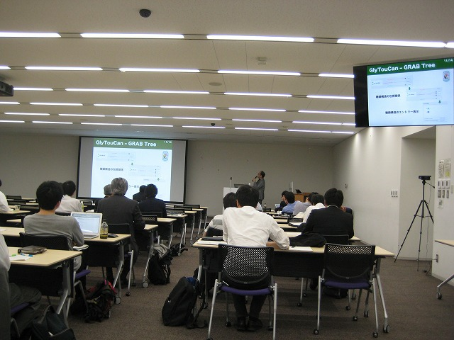
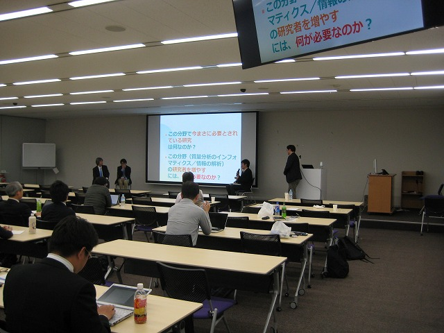
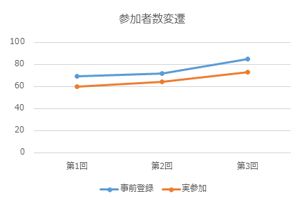
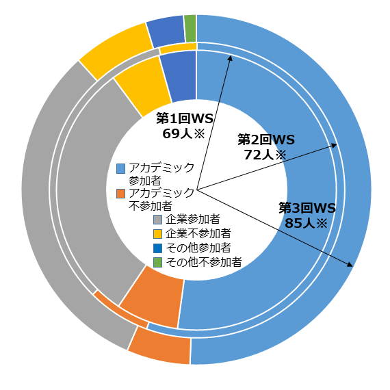
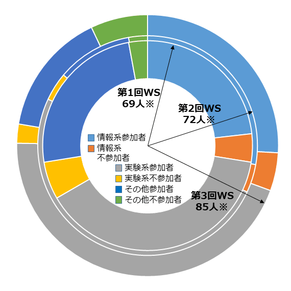
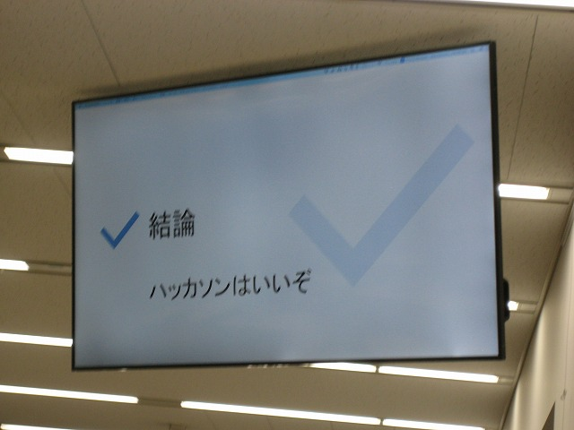

開催報告
（またもや）当初の予定から半年以上遅くなってしまいましたが、第3回ワークショップの開催報告を公開します。
第3回ワークショップは、予定どおり2018年4月23日（月）の午前10時半から、JST東京本部別館1Fホールにて開催されました。今回は初の「金曜日以外」「午前中からの開催」で、会場も今までのJST東京本部本館ではなく、K’s五番町ビルの別館に移動しました。曜日と会場が変わったのは会場の都合です（空いているタイミングを探した）。JST本部は位置・収容人数・費用全ての点で好ましいので、4ヶ月以上前から予約を試みるのですが、…どうやら4ヶ月では遅すぎるようです。
今回のワークショップは、JST NBDC統合化推進プログラム（統合データベース計画）のGlyCosmos（グライコーム統合）及びjPOST（プロテオーム統合）の各プロジェクトから協賛を頂いて実行しました。


ワークショップの告知：
今までと同様、以下の学会・団体に広告を掲載していただきました。有り難うございます。
- 日本バイオインフォマティクス学会(JSBi)
- 日本質量分析学会(MSSJ)
- 日本プロテオーム学会(JPrOS/JHUPO)
- 情報処理学会(SIG-BIO)
- 日本分子生物学会
- 日本生化学会
- 日本生物物理学会
- 糖鎖インフォマティクス若手の会
- サイエンスポータル
- 文部科学省・ライフサイエンスの広場
- バイオインダストリー協会
- ESI友の会
- メタボローム・シンポジウム若手の会（メーリングリスト）
- Mass++ユーザー会
参加者について：
参加者数は以下のとおりです：
| 事前登録人数 | 比率 | 当日参加人数 | 出席率 | |
|---|---|---|---|---|
| 事前参加登録者 | 78 | 66 | 84.6% | |
| うち情報系研究者と回答 | 23 | 29.5% | 19 | |
| うちJSBi会員 | 8 | 10.2% | 7 | |
| 講演者 | 5 | 5 | ||
| うち情報系研究者 | 1 | 20.0% | 1 | |
| うちJSBi会員 | 1 | 20.0% | 1 | |
| 主催者 | 2 | 2 | ||
| うち情報系研究者 | 2 | 100% | 2 | |
| うちJSBi会員 | 2 | 100% | 2 | |
| 当日参加者 | - | 0 | ||
| 計 | 85 | 73 | 85.9% |
今回は事前登録・実参加人数共に過去3回の最大人数で、参加者数は順調に拡大しています。
なお、この報告の最後に、今まで3回のワークショップを通しての参加者の傾向についてまとめます。
講演と総合討論について：
今回も今まで同様、講演者の先生方に「一番面白いとご自身が判断された題材を選んでいただき、40分という時間枠で自由に進めていただく」という形でお任せしており、タイムキーピングのベルなども導入しておりません。総合討論の時間が少しはみ出してしまい、ご迷惑をお掛けしたかもしれませんが、「あまり窮屈でない環境でゆったり進めたい」というスタンスで進めておりますので、ご理解をお願いします。
このあたり、いずれの講演者の先生方にもご協力いただいておりまして、例えば理化学研究所の柚木先生には、ご講演で「トランスオミクス解析の方法論」をクリスティの『オリエント急行の殺人』と対比する、という離れ業をご披露いただきました（「こういう話ができる（許容される雰囲気の）学会と、そうでないところがあるんですよ」とのことでした）。
私見ですが、情報系の学会のほうが、このような“雰囲気”という面ではより“緩い”（堅苦しくない）傾向があり（生物系の学会でも、生物物理学会や分子生物学会などはかなり緩いことが多いですが）、このワークショップは、上述した時間的制約の緩さとも併せてそのような緩い雰囲気（と、その結果生じる“ブレーンストーミング”の状態）を目指そうとしているため、或る程度は目標が達成できているのか、と考えます。
 また講師の先生方にご発表頂いた内容についても、リピドミクス・プロテオミクス・グライコプロテオミクス・トランスオミクスと幅広い内容をカバーすることができました。更に今回のワークショップ世話人でもある河野が「PSIミーティング」についての報告を行いました。PSIはHUPO（ヒトプロテオーム機構）の分科会で、プロテオミクスや質量分析に関わる各種の規格（ファイルのフォーマットなど）の策定を一手に担っており、現状ではここで決められたフォーマットはそのままメタボロミクス分野でも用いられています。この5年以上、継続してこのPSI会合に参加しているメンバーは日本からは河野だけですが、4月18～20日にハイデルベルクで行われた会合に参加後の、最新の動向のレポートでした。
また今回のワークショップの一般講演枠では、JST NBDC統合化推進プログラムによって進められている「糖鎖データベース」（GlyCosmos計画）から、3演題をご発表頂きました。実質的に招待講演1演題分のボリュームになったと思います。このほか、第1回のハッカソン参加者からの参加レポートもしてもらいました。
総合討論でも、今までに引き続き「どうやってこの分野の研究人口を増やしていくか」について議論を行いましたが、最初はぼちぼちと、その後結構な盛り上がりとなりました。残念ながら時間の関係で、盛り上がったところでお開きにせざるを得ませんでしたが、このような問題意識を時々再確認することは有益であろうと考えています。
また今回のワークショップでも、「問題がない」ということで許可を頂いたご講演については、今後順次、撮影をTogoTVのコンテンツとしてYouTubeで公開していく予定です。
今までの参加者の傾向分析：
まず事前登録者・実参加者ですが、下の折れ線グラフが示すとおり、順調に増加しています。アカデミック系と企業系の比率、実験系と情報系の比率などは3回とも、そして事前登録・実参加ともに大きな変化はないようです（そちらのグラフは省略）。
特にアカデミック系・企業系の比率は、下のパイチャートに示すように「アカデミックが半数強～60％程度」で概ね推移しています。2月に実施した第2回では相対的に企業系が減り、公的機関などからの参加者がいない、という傾向がありましたが、年度末が近づいていたことと関係があるのかもしれません。
※…事前参加登録者の人数
また実験系と情報系の比率も、自分を「情報系」と分類した回答者は概ね1/4程度で、半数弱程度が「実験系」という結果が得られています。「どちらでもない（研究者以外、或いは学生など）はやはり年度末には減るようです。
※…事前参加登録者の人数
このような参加者の傾向分析は、その時点での研究コミュニティの傾向を知る一助となると同時に、招待講演の内容を選定する手助けにもなります（ここでは集計していませんが、事前登録の際に回答頂いた「専門分野」を参考に、講演を依頼する分野を選ぶこともあります）。回答頂くことで、より需要に応じた内容にアップデートしていくことが可能になりますので、事前登録の際には､極力ご回答のほどお願いします。
それでは、次回第4回のワークショップにて、またお会いしましょう！
世話人： 吉沢 明康 （京都大学大学院薬学研究科）
河野 信 （東京大学大学院理学系研究科・ライフサイエンス統合データベースセンター）
守屋 勇樹 （ライフサイエンス統合データベースセンター）

第2回ワークショップ講演コンテンツ in 統合TV：
第3回ワークショップで頂いた招待講演のうち、撮影を許可された講演の動画は統合TVで公開されています。以下がそのリンクです。なお、一般公募演題の動画はありません。ご了承ください。
- 河野 信 （DBCLS） PSI meeting 2018 最新報告 （24分）［プロテオミクス，質量分析，標準化］
Page Last Updated: Apr. 20, 2019